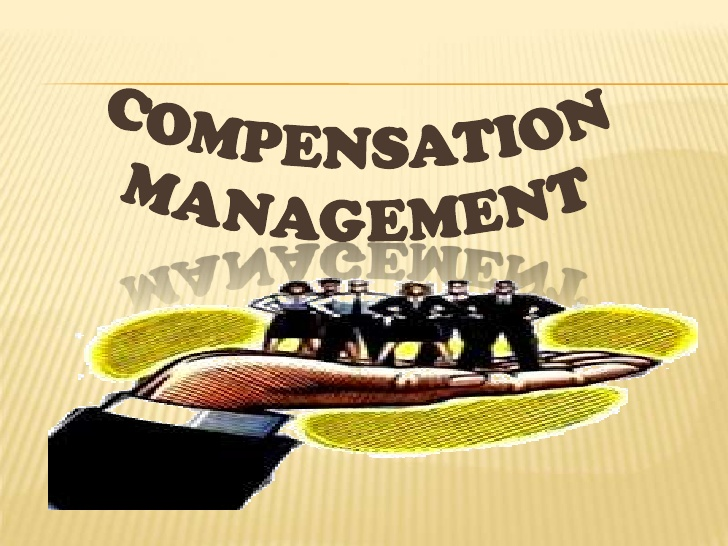

“Our Assets are walk out of the door each evening. We have to make sure that they come back the next morning”- Mr Narayan Murthy, Chief Mentor of Infosys. Employees are the main assets for the organization. They must be treated well. The following topics are covered during Compensation Management Module. History of Compensation Salary, Wages and compensation Compensation Strategy Compensation & Benefits Compensation Models Compensation Structure Risk & Control Compensation Survey Salary Slip Analysis CTC Analysis
